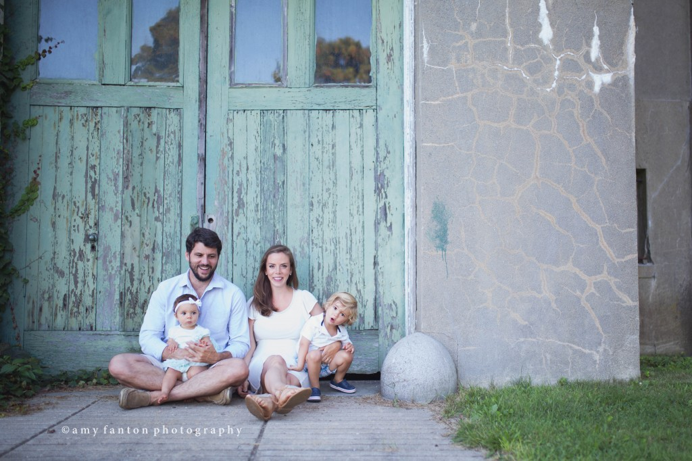
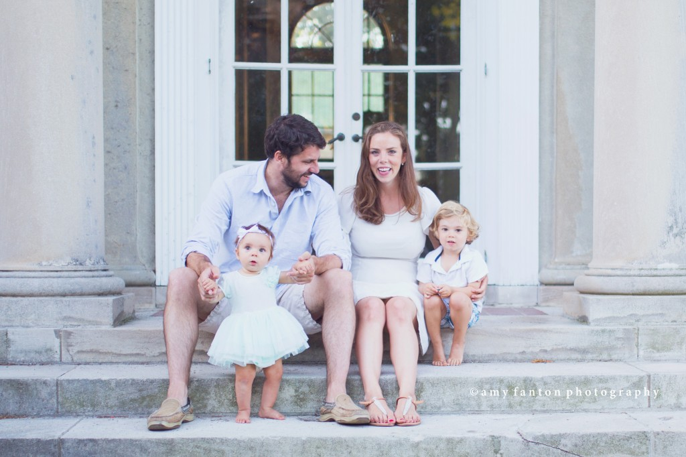
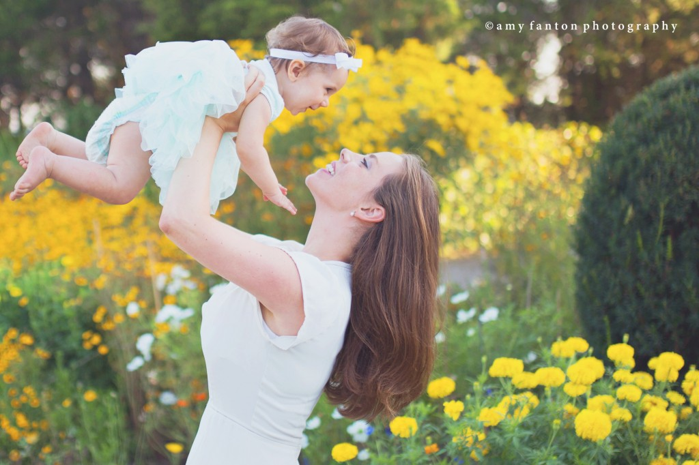

Family
An American Family in London
3 September 2014

Excited to share my take on the theme for this month’s blog circle–”my town”. For those of you who missed my first post about participating in a blog circle–I’ve joined a group of super talented photographers who will be blogging a monthly post on the same theme. Each photographer’s post will direct you to another photographer’s blog, so if you read all entries from one month you will “circle” through the members of our blog circle.
And on to this month’s theme! As an American family photographer living in London, raised in Connecticut, schooled in New York and married to an Argentinian, I’m not exactly sure what counts as “my town”. My heart is in a few places I guess, and every time I go from one of these places to the next I am reacquainted with a little bit of “home” that was missing all along. I love working as a family photographer in London but I do miss my summers on the beach in CT and the hustle and bustle of NYC.
Since we just returned from a lovely holiday in the States, I guess it makes sense to post a few family photos I took while were in in Mystic, Connecticut (or more specifically the family paradise where I spent my summers growing up–Groton Long Point, Connecticut–shhh don’t tell anyone!). I broke out my remote shutter and tripod and took a bunch of photos of all of us.
You can have a look at Lisa Lacroix's take on this months theme here: Lisa Lacroix – My Town

